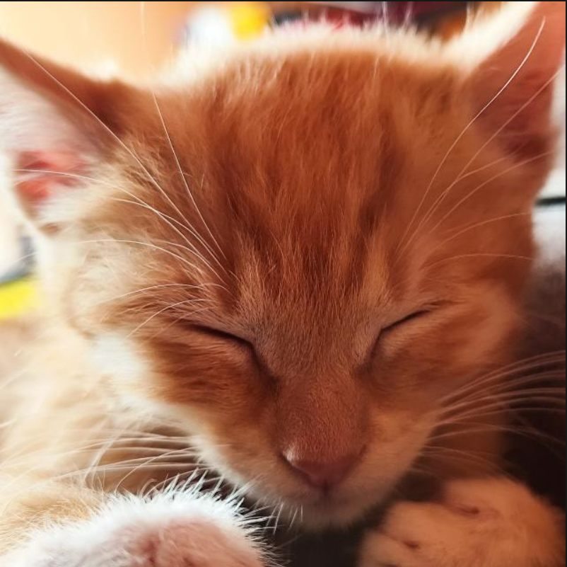

Manuel Fabrizio Callañaupa Cjuiro
Estudiante de ingeniería y desarrollador de software. Actualmente aplico mis conocimientos en el desarrollo de sistemas ERP y plataformas de control de asistencia corporativa usando arquitecturas MVC. Cuando no estoy escribiendo código o configurando componentes de hardware, dedico mi tiempo a mi otra gran pasión: el montañismo y el trekking por los paisajes de Cusco. Además, disfruto aprendiendo idiomas como el francés, inglés y alemán, y experimentando con recetas altas en proteínas.
Compañeros de Código 🐾

Milanesa